前言 此篇文章的基础上 ，让我们的微服务易于管理。
How 分布式配置中心 服务端配置 创建配置文件 需要手动在Nacos服务器中写项目的配置文件，我们依然采用 YAML 的方式部署配置文件，操作流程如下：
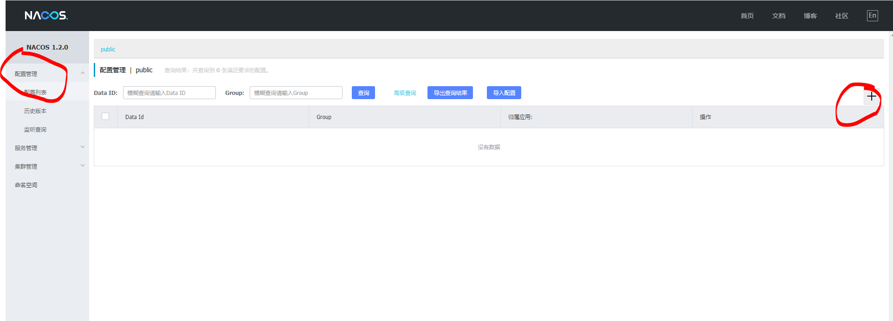
新建配置文件，此处我们以之前创建的 [**服务提供者**](# 服务提供者) 项目为例（将此项目中的yml内容拷贝过来），发布
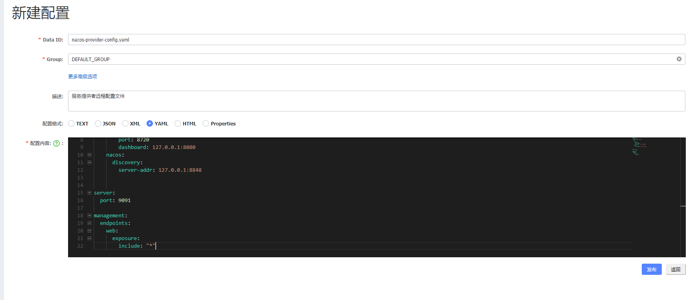
注意：Data ID 的默认扩展名为 .properties ，希望使用 YAML 配置，此处必须指明是 .yaml
发布成功后在 “配置列表” 一栏即可看到刚才创建的配置项
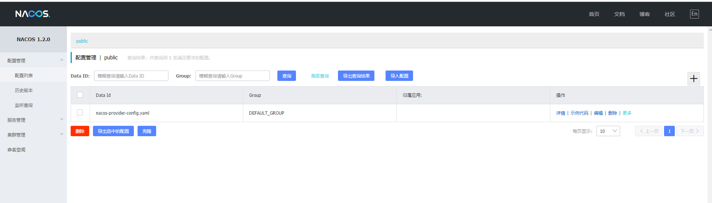
客户端配置 pom 此处我们以之前创建的 [**服务提供者**](# 服务提供者) 项目为例，之后以外项目的配置，就不展示了
在 pom.xml 中增加 org.springframework.cloud:spring-cloud-starter-alibaba-nacos-config 依赖
1 2 3 4 <dependency > <groupId > com.alibaba.cloud</groupId > <artifactId > spring-cloud-starter-alibaba-nacos-config</artifactId > </dependency >
bootstrap.properties 创建名为 bootstrap.properties 的配置文件并删除之前创建的 application.yml 配置文件，由于已经在服务端配置，此处不再赘述
1 2 3 4 5 6 spring.application.name =nacos-provider-config spring.cloud.nacos.config.file-extension =yaml spring.cloud.nacos.config.server-addr =127.0.0.1:8848
注意： Spring Boot 配置文件的加载顺序，依次为 bootstrap.properties -> bootstrap.yml -> application.properties -> application.yml ，其中 bootstrap.properties 配置为最高优先级
不采用bootstrap.properties最高优先级的话，配置文件是加载不到的
启动程序 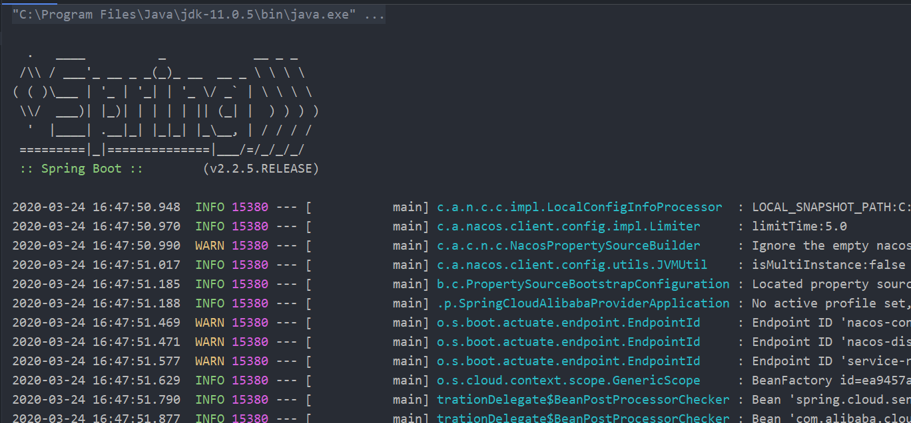
配置动态更新
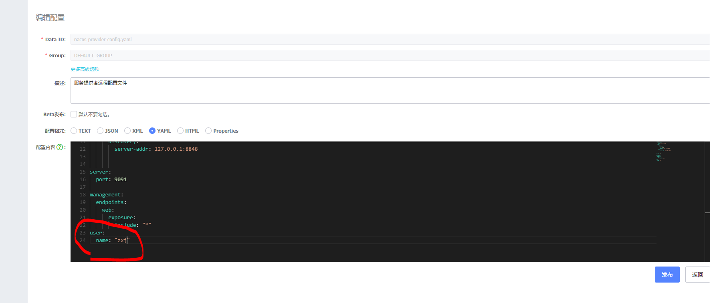
1 2 3 4 5 6 7 8 9 10 @Autowired private ConfigurableApplicationContext applicationContext; @GetMapping(value = "/hi") public String sayHi () return "Hello " + applicationContext.getEnvironment().getProperty("user.name" ); }
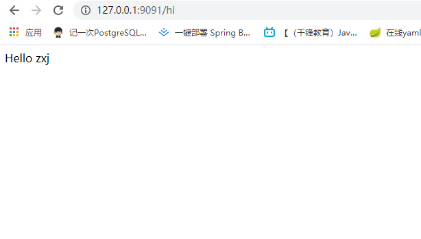
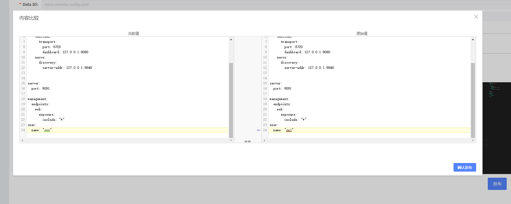
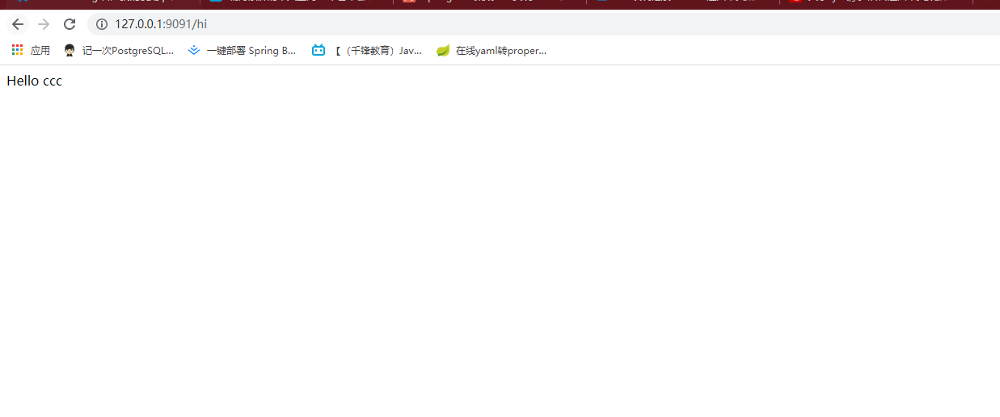
注意：你可以使用 spring.cloud.nacos.config.refresh.enabled=false 来关闭动态刷新
Nacos多环境配置 Spring Boot Profile 我们在做项目开发的时候，生产环境和测试环境的一些配置可能会不一样，有时候一些功能也可能会不一样，所以我们可能会在上线的时候手工修改这些配置信息。但是 Spring 中为我们提供了 Profile 这个功能。我们只需要在启动的时候添加一个虚拟机参数，激活自己环境所要用的 Profile 就可以了。
操作起来很简单，只需要为不同的环境编写专门的配置文件，如：application-dev.yml、application-prod.yml， 启动项目时只需要增加一个命令参数 --spring.profiles.active=环境配置 即可，启动命令如下：
java -jar xxx.jar --spring.profiles.active=prod
Nacos Config Profile spring-cloud-starter-alibaba-nacos-config 在加载配置的时候，不仅仅加载了以 dataid 为 ${spring.application.name}.${file-extension:properties} 为前缀的基础配置，还加载了 dataid 为 ${spring.application.name}-${profile}.${file-extension:properties} 的基础配置。在日常开发中如果遇到多套环境下的不同配置，可以通过 Spring 提供的 ${spring.profiles.active} 这个配置项来配置。
此处我们以之前创建的 [**服务提供者**](# 服务提供者) 项目为例
测试 添加发布配置
增加一个名为 nacos-provider-config-prod.yaml 的配置
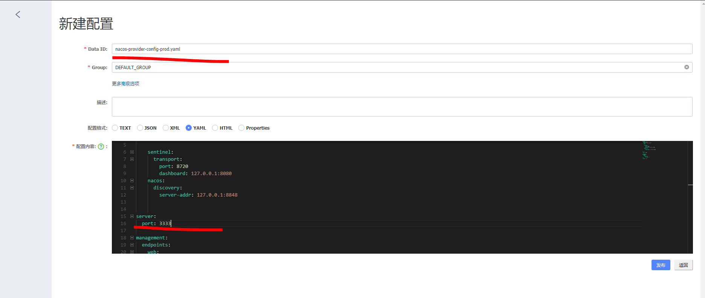
port: 9091->3333
项目中添加配置
增加一个名为 bootstrap-prod.properties 的配置文件，内容如下：
1 2 3 4 5 spring.profiles.active =prod spring.application.name =nacos-provider-config spring.cloud.nacos.config.file-extension =yaml spring.cloud.nacos.config.server-addr =127.0.0.1:8848
主要增加了 spring.profiles.active=prod 配置，用于指定访问 Nacos Server 中的 nacos-provider-config-prod.yaml 配置
启动项目
此时我们有两个配置文件，分别为 bootstrap.properties 和 bootstrap-prod.properties ，我们需要指定启动时加载哪一个配置文件，操作流程如下：
Run -> Edit Configurations..
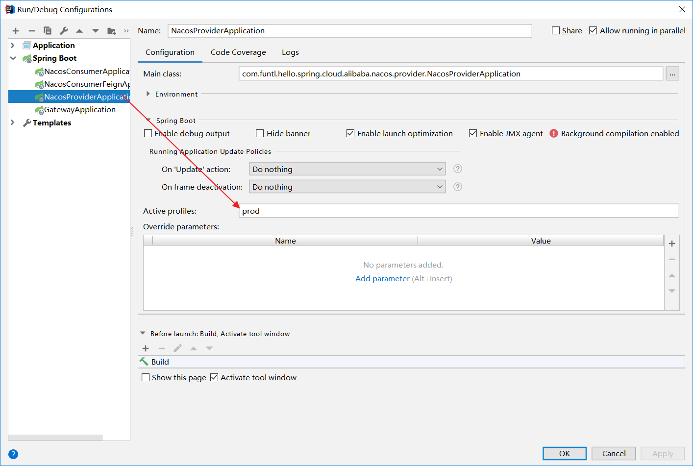
Spring Cloud Alibaba链路追踪 引用为什么需要链路追踪
服务端设置
下载elasticsearch
下载skywalking发行包
bin/elasticsearch.bat运行
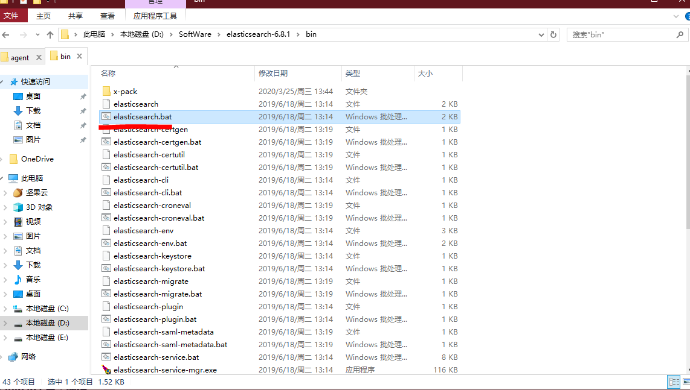
修改skywalking的elasticsearch配置
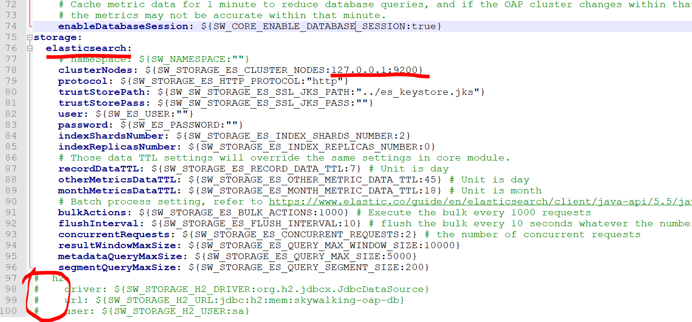
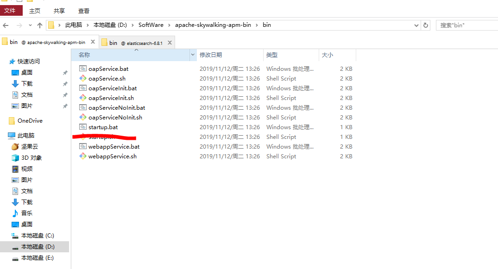
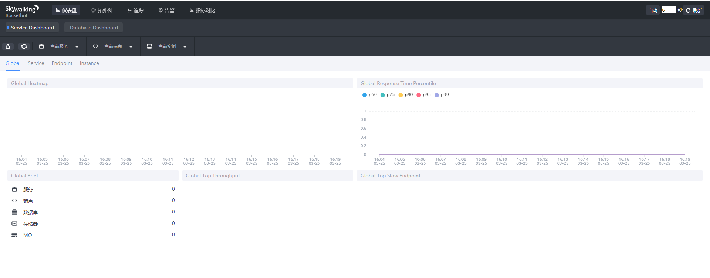
服务间异步通信 之前的feign/ribbon方式都是Http Client方式，不是异步的。这里我们通过Rocket MQ来实现异步通信
RocketMQ 简介 Apache Alibaba RocketMQ 是一个消息中间件。消息中间件中有两个角色：消息生产者和消息消费者。RocketMQ 里同样有这两个概念，消息生产者负责创建消息并发送到 RocketMQ 服务器，RocketMQ 服务器会将消息持久化到磁盘，消息消费者从 RocketMQ 服务器拉取消息并提交给应用消费。
RocketMQ 特点 RocketMQ 是一款分布式、队列模型的消息中间件，具有以下特点：
支持严格的消息顺序
支持 Topic 与 Queue 两种模式
亿级消息堆积能力
比较友好的分布式特性
同时支持 Push 与 Pull 方式消费消息
历经多次天猫双十一海量消息考验
RocketMQ 优势 目前主流的 MQ 主要是 RocketMQ、kafka、RabbitMQ，其主要优势有：
支持事务型消息（消息发送和 DB 操作保持两方的最终一致性，RabbitMQ 和 Kafka 不支持）
支持结合 RocketMQ 的多个系统之间数据最终一致性（多方事务，二方事务是前提）
支持 18 个级别的延迟消息（RabbitMQ 和 Kafka 不支持）
支持指定次数和时间间隔的失败消息重发（Kafka 不支持，RabbitMQ 需要手动确认）
支持 Consumer 端 Tag 过滤，减少不必要的网络传输（RabbitMQ 和 Kafka 不支持）
支持重复消费（RabbitMQ 不支持，Kafka 支持）
消息队列对比参照表
基于Docker快速安装 docker-compose.yml 注意：启动 RocketMQ Server + Broker + Console 至少需要 2G 内存
1 2 3 4 5 6 7 8 9 10 11 12 13 14 15 16 17 18 19 20 21 22 23 24 25 26 27 28 29 30 31 32 33 34 35 36 37 38 39 40 41 42 43 44 45 46 47 48 49 50 51 52 53 54 55 version: '3.5' services: rmqnamesrv: image: foxiswho/rocketmq:server container_name: rmqnamesrv ports: - 9876 :9876 volumes: - ./data/logs:/opt/logs - ./data/store:/opt/store networks: rmq: aliases: - rmqnamesrv rmqbroker: image: foxiswho/rocketmq:broker container_name: rmqbroker ports: - 10909 :10909 - 10911 :10911 volumes: - ./data/logs:/opt/logs - ./data/store:/opt/store - ./data/brokerconf/broker.conf:/etc/rocketmq/broker.conf environment: NAMESRV_ADDR: "rmqnamesrv:9876" JAVA_OPTS: " -Duser.home=/opt" JAVA_OPT_EXT: "-server -Xms128m -Xmx128m -Xmn128m" command: mqbroker -c /etc/rocketmq/broker.conf depends_on: - rmqnamesrv networks: rmq: aliases: - rmqbroker rmqconsole: image: styletang/rocketmq-console-ng container_name: rmqconsole ports: - 8080 :8080 environment: JAVA_OPTS: "-Drocketmq.namesrv.addr=rmqnamesrv:9876 -Dcom.rocketmq.sendMessageWithVIPChannel=false" depends_on: - rmqnamesrv networks: rmq: aliases: - rmqconsole networks: rmq: name: rmq driver: bridge
broker.conf RocketMQ Broker 需要一个配置文件，按照上面的 Compose 配置，我们需要在 ./data/brokerconf/ 目录下创建一个名为 broker.conf 的配置文件，内容如下：
1 2 3 4 5 6 7 8 9 10 11 12 13 14 15 16 17 18 19 20 21 22 23 24 25 26 27 28 29 30 31 32 33 34 35 36 37 38 39 40 41 42 43 44 45 46 47 48 49 50 51 52 53 54 55 56 57 58 59 60 61 62 63 64 65 66 67 68 69 70 71 72 73 74 75 76 77 78 79 80 81 82 83 84 85 86 87 88 89 90 91 92 93 94 95 96 brokerClusterName =DefaultCluster brokerName =broker-a brokerId =0 defaultTopicQueueNums =4 autoCreateTopicEnable =true autoCreateSubscriptionGroup =true listenPort =10911 deleteWhen =04 fileReservedTime =120 mapedFileSizeCommitLog =1073741824 mapedFileSizeConsumeQueue =300000 diskMaxUsedSpaceRatio =88 maxMessageSize =65536 brokerRole =ASYNC_MASTER flushDiskType =ASYNC_FLUSH
RocketMQ 控制台 访问 http://rmqIP:8080 登入控制台
生产端 概述 RocketMQ 是一款开源的分布式消息系统，基于高可用分布式集群技术，提供低延时的、高可靠的消息发布与订阅服务。
由于本教程整个案例基于 Spring Cloud，故我们采用 Spring Cloud Stream 完成一次发布和订阅
官方教程
Spring Cloud Stream Spring Cloud Stream 是一个用于构建基于消息的微服务应用框架。它基于 Spring Boot 来创建具有生产级别的单机 Spring 应用，并且使用 Spring Integration 与 Broker 进行连接。
Spring Cloud Stream 提供了消息中间件配置的统一抽象，推出了 publish-subscribe、consumer groups、partition 这些统一的概念。
Spring Cloud Stream 内部有两个概念：
Binder： 跟外部消息中间件集成的组件，用来创建 Binding，各消息中间件都有自己的 Binder 实现。Binding： 包括 Input Binding 和 Output Binding。（用它来声明调用的topic）
Binding 在消息中间件与应用程序提供的 Provider 和 Consumer 之间提供了一个桥梁，实现了开发者只需使用应用程序的 Provider 或 Consumer 生产或消费数据即可，屏蔽了开发者与底层消息中间件的接触。
解决连接超时问题 在之前的 [基于 Docker 安装 RocketMQ](# 基于Docker快速安装) 章节中，我们采用 Docker 部署了 RocketMQ 服务，此时 RocketMQ Broker 暴露的地址和端口(10909，10911)是基于容器的，会导致我们开发机无法连接，从而引发 org.apache.rocketmq.remoting.exception.RemotingTooMuchRequestException: sendDefaultImpl call timeout 异常
注意下图中的 IP 地址，这个是容器的 IP，开发机与容器不在一个局域网所以无法连接。
解决方案是在 broker.conf 配置文件中增加 brokerIP1=宿主机IP 即可
pom 1 2 3 4 5 <dependency > <groupId > com.alibaba.cloud</groupId > <artifactId > spring-cloud-starter-stream-rocketmq</artifactId > </dependency >
Application 1 2 3 4 5 6 7 8 9 10 11 12 13 14 15 16 17 18 19 20 21 22 23 24 25 26 27 28 29 30 31 32 33 @SpringBootApplication @EnableBinding({Source.class, Sink.class}) public class SpringCloudAlibabaRocketMqProviderApplication public static void main (String[] args) SpringApplication.run(SpringCloudAlibabaRocketMqProviderApplication.class, args); } }
yml 1 2 3 4 5 6 7 8 9 10 11 12 13 14 spring: application: name: rocketmq-provider cloud: stream: rocketmq: binder: name-server: 127.0 .0 .1 :9876 bindings: output: {destination: test-topic1 , content-type: application/json }
测试发送消息 1 2 3 4 5 6 7 8 9 10 11 12 13 14 15 16 17 18 19 public class TestMessageSend implements CommandLineRunner @Autowired private MessageChannel output; @Override public void run (String... args) throws Exception Map<String, Object> headers = new HashMap<>(); headers.put(MessageConst.PROPERTY_TAGS, "tagStr" ); Message message = MessageBuilder.createMessage("asd" , new MessageHeaders(headers)); output.send(message); } }
消费端 pom 1 2 3 4 <dependency > <groupId > com.alibaba.cloud</groupId > <artifactId > spring-cloud-starter-stream-rocketmq</artifactId > </dependency >
Application 1 2 3 4 5 6 7 @SpringBootApplication @EnableBinding({Sink.class}) public class SpringCloudAlibabaRocketmqConsumerApplication public static void main (String[] args) SpringApplication.run(SpringCloudAlibabaRocketmqConsumerApplication.class, args); } }
yml 1 2 3 4 5 6 7 8 9 10 11 12 13 14 15 16 17 18 19 20 21 22 spring: application: name: rocketmq-consumer cloud: stream: bindings: input: content-type: text/plain destination: test-topic1 group: test-group1 rocketmq: binder: name-server: 192.168 .174 .134 :9876 bindings: input: consumer: orderly: true server: port: 7745
测试接收消息 1 2 3 4 5 6 7 8 @Service public class SubscribeMessageTest @StreamListener("input") public void receiveInput1 (String message) System.out.println("Receive input: " + message); } }
自定义binding 如果每个生产者消费者都需要使用多个topic，则需要这样
生产者 较上面比，以下需要不同
application 1 2 3 4 5 6 7 8 9 10 @SpringBootApplication @EnableBinding({MySource.class}) public class SpringCloudAlibabaRocketMqProviderApplication public static void main (String[] args) SpringApplication.run(SpringCloudAlibabaRocketMqProviderApplication.class, args); } }
MySouce 1 2 3 4 5 6 7 8 public interface MySource @Output("output1") MessageChannel output1 () ; @Output("output2") MessageChannel output2 () ; }
yml 1 2 3 4 5 6 7 8 9 10 11 12 13 14 15 16 spring: application: name: rocketmq-provider cloud: stream: rocketmq: binder: name-server: 192.168 .174 .134 :9876 bindings: output1: {destination: test-topic1 , content-type: application/json } output2: {destination: test-topic2 , content-type: application/json }
发送消息 1 2 3 4 5 6 7 8 9 10 11 12 13 14 15 @Component public class TestMessageSend implements CommandLineRunner @Autowired private MySource channel; @Override public void run (String... args) throws Exception Map<String, Object> headers = new HashMap<>(); headers.put(MessageConst.PROPERTY_TAGS, "tagStr" ); Message message = MessageBuilder.createMessage("aaa" , new MessageHeaders(headers)); channel.output1().send(message); channel.output2().send(MessageBuilder.withPayload("ddd" ).build()); } }
消费者 较上面比，以下需要不同
application 1 2 3 4 5 6 7 8 9 @SpringBootApplication @EnableBinding({MySink.class}) public class SpringCloudAlibabaRocketmqConsumerApplication public static void main (String[] args) SpringApplication.run(SpringCloudAlibabaRocketmqConsumerApplication.class, args); } }
MySink 1 2 3 4 5 6 7 8 9 10 11 12 public interface MySink @Input("input1") SubscribableChannel input1 () ; @Input("input2") SubscribableChannel input2 () ; }
yml 1 2 3 4 5 6 7 8 9 10 11 12 13 14 15 16 17 18 19 20 21 22 23 24 25 26 27 28 29 30 31 32 33 spring: application: name: rocketmq-consumer cloud: stream: bindings: input1: content-type: text/plain destination: test-topic1 group: test-group1 input2: consumer: concurrency: 20 maxAttempts: 1 content-type: text/plain destination: test-topic2 group: test-group2 rocketmq: binder: name-server: 192.168 .174 .134 :9876 bindings: input1: consumer: orderly: true input2: consumer: orderly: false server: port: 7745
接收消息 1 2 3 4 5 6 7 8 9 10 11 12 13 14 @Service public class SubscribeMessageTest @StreamListener("input1") public void receiveInput1 (String message) System.out.println("Receive input: " + message); } @StreamListener("input2") public void receiveInput2 (String message) System.out.println("Receive input: " + message); } }
转载 RocketMQ 简介